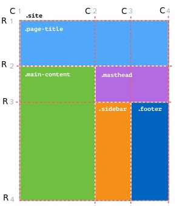

A 2-dimensional layout system that handles both rows and columns
- Define a grid based on your design
- Place items within the grid
How to create a simple grid layout?
Plan the layout
- Identify different element blocks in the design
- Decide the number of row lines and column lines required to create the design
- Get a rough idea about the column width and row height required
Parent / wrapper (grid-container) element and its styling
- Add a parent / wrapper for the grid
- Give "display: grid" to it
- Add css properties for creating grid columns and grid rows using "grid-template-columns" and "grid-template-rows". Take length values (em, px, %, fr) denoting the distance between each line to the grid container.
Child elements (grid-items) and its styling
- Place the elements (gird items or child elements) in the respective grid cells using the css properties: "grid-column" and "grid-row". This uses column start line and column end line for that particular block
- Add other blocks/elements based on its start and end column / row lines
Example

.site {
display: grid;
grid-template-columns: 2fr 1fr 1fr;
grid-template-rows: auto 300px auto;
}
.masthead {
grid-row: 2/3;
grid-column: 2/4;
}
To make the this block responsive for mobile - change the grid column and grid row of that block
(What lines to target seems tricky)
.masthead {
grid-row: 2/3;
grid-column: 1/4;
}